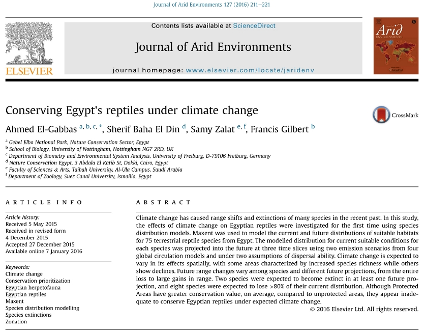

Ahmed El-Gabbas; Sherif Baha El Din; Samy Zalat; Francis Gilbert (2016). Conserving Egypt's reptiles under climate change. Journal of Arid Environments, 127:211-221.
Abstract:
Climate change has caused range shifts and extinctions of many species in the recent past. In this study, the effects of climate change on Egyptian reptiles were investigated for the first time using species distribution models. Maxent was used to model
the current and future distributions of suitable habitats for 75 terrestrial reptile species from Egypt. The modelled distribution for current suitable conditions for each species was projected into the future at three time slices using two
emission scenarios from four global circulation models and under two assumptions of dispersal ability. Climate change is expected to vary in its effects spatially, with some areas characterized by increased species richness while others show
declines. Future range changes vary among species and different future projections, from the entire loss to large gains in range. Two species were expected to become extinct in at least one future projection, and eight species were expected
to lose >80% of their current distribution. Although Protected Areas have greater conservation value, on average, compared to unprotected areas, they appear inadequate to conserve Egyptian reptiles under expected climate change.
|

|
Download PDF

Supporting Information
|
Ahmed El-Gabbas
Sherif Baha El Din
Samy Zalat
Francis Gilbert
Conserving Egypt’s reptiles under climate change
Journal of Arid Environments, 127:211–221
10.1016/j.jaridenv.2015.12.007
Climate change has caused range shifts and extinctions of many species in the recent past. In this study, the effects of climate change on Egyptian reptiles were investigated for the first time using species distribution models. Maxent was
used to model the current and future distributions of suitable habitats for 75 terrestrial reptile species from Egypt. The modelled distribution for current suitable conditions for each species was projected into the future at three time slices
using two emission scenarios from four global circulation models and under two assumptions of dispersal ability. Climate change is expected to vary in its effects spatially, with some areas characterized by increased species richness while others
show declines. Future range changes vary among species and different future projections, from the entire loss to large gains in range. Two species were expected to become extinct in at least one future projection, and eight species were expected
to lose >80% of their current distribution. Although Protected Areas have greater conservation value, on average, compared to unprotected areas, they appear inadequate to conserve Egyptian reptiles under expected climate change.
Over the
last century, relatively rapid changes of the Earth's climate have been recorded with warmer temperatures accompanied by altered geographical and seasonal distributions of precipitation (Araújo and Rahbek, 2006; Thuiller, 2007). There is widespread
agreement that climate change will have a large impact on the survival of populations, species and communities (Suarez and Tsutsui, 2004), and that biodiversity is continually being transformed in response to it (Hannah et al., 2005). Over the
last 40 years climate change has been implicated as the main cause for distributional shifts and extinctions (Thomas et al., 2004), with a particularly strong impact on butterflies, birds and species at high altitude (Hannah, 2011). Although the
recorded effects of climate change on biodiversity seem in general to materialize rather slowly, its effects are expected to become increasingly prominent over the next 50 years and beyond (Thuiller, 2007). Some climate change model forecasts
suggest that 15–37% of current species will be committed to extinction by 2050 (even without taking into consideration the biological factors of competition and evolutionary history) (Thuiller, 2007), making it essential to involve measures for
mitigating its potential impacts in future conservation plans.
Detailed information on the ecological and geographical distributions of species is essential for conservation planning and forecasting (Elith et al., 2006) especially where species
face multiple conservation problems. Species Distribution Models (SDMs) quantify the relationship between species' occurrence and environmental variables and allow users to extrapolate this relationship to new areas or time periods. SDMs have
been widely used to estimate the potential impacts of climate change on species distributions and ecosystems (Franklin, 2009) and estimate potential future extinction risks. Once a model has been calibrated for current climate conditions, it can
be used to estimate potential distributions at different time periods (in the future or the past) by using information on expected climates, or to different study areas in order to assess the potential locations where invasions are more likely
to establish (Franklin, 2009). This helps to manage species facing possible future threats by identifying biological corridors for dispersal, determining sites for re-introduction and areas require more protection measures (Thuiller, 2007).
Climate change will potentially affect the biodiversity and species composition of Egyptian ecosystems (Tolba and Saab, 2009), but only a handful of quantitative studies of the local fauna/flora have been conducted using SDMs. This may be because
the models are relatively new and because until very recently reliable comprehensive biodiversity records for the Egyptian fauna and flora were not available. As a developing country, Egypt lacks a recording scheme to collate species sightings
(either at national or even at local Protected Area level). Between 2004 and 2008, all available biodiversity records were collated by the BioMAP project (see: http://www.biomapegypt.org/), and studies of butterflies and mammals using SDMs became
possible (Gilbert and Zalat, 2008; Basuony et al., 2010; Newbold, 2009; Newbold et al., 2009a,b). A few other SDM studies have been published: El Alqamy et al. (2010), to estimate the potential distribution of the Nubian Ibex (Capra nubiana) in
South Sinai; Soultan (2011), to test the potential impact of climate change on the distribution of four Egyptian antelope species; and Leach et al. (2013), who assessed the effect of climate change on the future effectiveness of the Protected
Area network, using data on Egyptian butterflies and mammals. The only other study of the effects of climate change in Egypt, by Hoyle and James (2005) on the world's smallest butterfly, the Sinai Baton Blue (Pseudophilotes sinaicus), used an
occupancy-based Population Viability Analysis.
The global current Protected Areas seem not to overlap well with areas of high biodiversity value, and are traditionally determined spatially and environmentally under the assumption of relatively
low changes in species distribution in the future (Araújo, 2009; Leach et al., 2013). As climate change is expected to affect the future distribution/range of many species globally (potentially moving some species out from Protected Areas; Hannah
et al. 2007), it challenges the future effectiveness of current Protected Areas. Future conservation investments should be effectively prioritized due to the limited resources available (Wilson et al., 2009; especially in the developing countries),
and early actions may be more effective and less costly than delayed or no actions (Hannah et al. 2007). Conservation prioritization can be at taxonomic (for the protection of some rare or endangered species) or spatial (conserving a particular
habitat type or species rich areas, e.g. potential Protected Areas) scale. Spatial conservation prioritization uses spatial quantitative data to identify areas of high conservation priority (Wilson et al., 2009), and some techniques have been
available recently; e.g. Zonation (Moilanen et al., 2012) and Marxan (Ball et al., 2009). Some of those techniques can use spatial outputs from SDMs to prioritize areas for conservation under current and future climates.
To date, there are
30 Protected Areas in Egypt covering >15% of its total area. Their distribution shows good spatial coverage, although some areas of high diversity importance (especially at the Nile Valley and Delta) are not yet protected (Newbold et al., 2009a).
They were declared relatively recently (first in 1983) and were determined mainly based on experts' known knowledge of the country biodiversity (Newbold et al., 2009a). The capacity of current Protected Areas in Egypt to mitigate for potential
impacts of climate change on different species groups is not well-investigated yet and a qualitative assessment of their future effectiveness is highly required. Also, spatial prioritization of the Egypt's landscape (inside and outside the Protected
Areas) is required to identify potential locations for future Protected Areas and identify current Protected Areas need more conservation effort in the future.
As a developing country, Egypt lacks enough good-quality data to be used directly
for spatial conservation prioritization, but SDMs can provide valuable estimates for species suitabilities in the space. In this study, we use data for the Egyptian reptiles, for the first time, to run SDMs (as a representation group for the Egyptian
fauna). Baha El Din (2001, 2006) presented a geographic interpretation of Egypt's herpetofaunal distribution, qualitatively identifying priority conservation areas, but very little has been published on how the Egyptian herpetofauna may respond
to climate change. We used Maxent to model the distribution of Egyptian reptiles under current climate conditions, then models are projected into the future to show how collectively and individual species are expected to respond to future climate
change under different assumptions. For each species, future expected range change (% loss or gain of currently suitable habitats) is estimated, aiming to shed light on some species require more strict conservation actions. Expected reptiles'
species richness (under current and future climates) is estimated to identify areas of current high reptile suitability and areas expected to undergo much changes in suitability in the future. Model predictions were used for prioritizing the Egyptian
landscape under current and future climates. We used Zonation software (Moilanen et al., 2012) to assess the likely effectiveness of Egypt's Protected Area network under current and future climate. Outputs from Zonation represent hierarchic ranking
of the landscape for conservation and can be easily visualized as maps. We hope the results of the current study to be useful for biodiversity conservation in Egypt and (along with the results of relative studies) to be taken into account by the
decision makers in future national conservation plans.
Study area and presence records
According to Baha El Din (2006), Egypt has at least 109 species of reptiles: 61 lizards, 39 snakes, a crocodile, seven turtles and a tortoise, and
Acanthodactylus aegyptius has been added as a distinct species since (Baha El Din, 2007). The main source of species location records was the BioMAP (www.biomapegypt.org) database of Egyptian biodiversity records; with our own records, the data
are comprehensive for the herpetofauna. Records for marine or aquatic species from the Nile were excluded because of the lack of GIS predictor layers for aquatic environments.
The taxonomic and georeferencing accuracy of these records were
exhaustively checked, assessed and revised. We limited our scope to species with at least eight unique pixels (at a resolution of 2.5 arc minutes) to avoid over-fitting (Baldwin, 2009): this meant that a total of 75 species were processed (49
lizards, 25 snakes, and a tortoise: Table S1). The coverage of the records is good (Fig. S1a); they include most of Egypt's landscape and habitats. There was an inevitable bias in recording effort (represented by the number of valid records) towards
the main cities and populated areas (Fig. S1b): unsurprisingly, the highest collection effort was found around the greater Cairo district, followed by South Sinai (the St Katherine area), the Alexandria area, some areas around Fayoum and Wadi
El-Natrun and small patches near El-Arish and Mersa Matruh. (Figs. S2–S3 show a map of Egypt overlaid with geographical locations of areas mentioned in this study and the locations of currently established Protected Areas, respectively).
Environmental predictor variables
Climate data for the near past (1950–2000) were downloaded from WorldClim Global Climate Data v1.4 (release 3 – see http://www.worldclim.org/bioclim) (Hijmans et al., 2005). These data represent current climate
conditions and comprise 19 ‘bioclimatic’ variables derived from precipitation and temperature records (Table 1). Four (Bio-7, -14, -17 & -18) were rejected a priori as not sufficiently variable across Egypt, reflecting the country's status as
the driest country in the world (FAO, 2012). A resolution of 2.5 arc-minutes (∼5 × 5 km) best matched the level of positional uncertainty that accompanies the records (most of which derive from museum records georeferenced by site name), and because
the climate data for Egypt were interpolated using relatively few weather stations largely concentrated in the Nile Valley and Delta (see Fig. 2.3 in Newbold, 2009). This relatively coarse resolution is also useful to minimise the effect of ignoring
species interactions on modelled distributions (Pearson and Dawson, 2003).
Table 1. List of variables used to calculate VIF values; rows shaded with grey show variables with VIF values less than 10 and so used to run the models. Four (Bio-7,
-14, -17 & -18) were rejected a priori (see text).
Altitude Altitude
NDVI_Max NDVI maximum value
NDVI_Difference Absolute difference between the highest and lowest NDVI values
Bio1 Annual mean temperature
Bio2 Mean diurnal
range (mean of monthly (max temp − min temp))
Bio3 Isothermality (Bio2/Bio7) (*100)
Bio4 Temperature seasonality (standard deviation*100)
Bio5 Maximum temperature of the warmest month
Bio6 Minimum temperature of the coldest
month
Bio8 Mean temperature of the wettest quarter
Bio9 Mean temperature of the driest quarter
Bio10 Mean temperature of the warmest quarter
Bio11 Mean temperature of the coldest quarter
Bio12 Annual precipitation
Bio13 Precipitation of the wettest month
Bio15 Precipitation seasonality (coefficient of variation)
Bio16 Precipitation of the wettest quarter
Bio19 Precipitation of the coldest quarter
Elevation data were obtained from the
SRTM Digital Elevation Database v4.1 [available at: http://www.cgiar-csi.org/data/elevation]. The tiles that cover Egypt were downloaded at 90-m resolution and rescaled to 2.5 arc minutes. We also used an Egyptian habitat map from the BioMAP project
(A. A. Hassan, unpublished data). In this map, the habitat of Egypt is classified into 11 classes (sea, littoral coastal land, cultivated land, sand dune, wadi, metamorphic rock, igneous rock, gravels, serir sand sheets, sabkhas and sedimentary
rocks – see: Newbold et al., 2009a). Normalized Difference Vegetation Index (NDVI) data for seven years (from Jan 2004 to Dec 2010) were downloaded from the SPOT Vegetation website (see: http://free.vgt.vito.be/). Two layers were derived from
these maps and used as predictors in the models: maximum NDVI value (indicating how much vegetation there is per pixel), and the difference between maximum and minimum NDVI value (indicating variability in vegetation per pixel).
To reduce
colinearity among predictors and over-fitting, the Variance Inflation Factor (VIF) was calculated for the continuous predictors using R v2.15.0 (R Development Core Team, 2012) and used to prune predictors before use (e.g. Bombi et al., 2012) until
all remaining variables yielded VIF values below 10 (Table 1): these were then used in the Maxent modelling.
Climate models used
To estimate the potential impact of climate change, current distribution models were projected into the
future for three time slices (2020s, 2050s, and 2080s, each the median of a 30-year window). Future climate data (IPCC, 2007: downloaded from http://www.ccafs-climate.org/) derived from four independent Global Circulation Models (GCMs) were used
to obtain consensus estimations about the fate of the herpetofauna. These GCMs were the Hadley Centre Coupled Model, version 3 (HadCM3), the Canadian second-generation coupled global climate model (CGCM2-CCCma), the Australian model (CSIRO Mk2)
and a Japanese model (NIES99), all frequently used in similar studies (e.g. Araújo et al., 2006; Holt et al., 2009). Our results assume that species try to track their suitable habitat (dependent on dispersal ability) rather than accommodate or
adapt to the new conditions.
For each GCM model and time slice, two emission scenarios (A2a and B2a) were used, the most commonly used scenarios in climate-change assessments (Hannah, 2011). They reflect two different assumptions about the
levels of CO2 emissions, linked to assumed demographic changes and socio-economic and technological developments (Marini et al., 2009). The A2a scenario assumes a lot of climate change caused by medium to high CO2 emission rates (the “business
as usual” scenario), while the B2a scenario assumes relatively little change because of mitigation measures (the “moderate” scenario) (Sauer et al., 2011; Taubmann et al., 2011). There are no data on how NDVI and habitat variables might change
in Egypt in the future, and so we assume they (and altitude) remain constant. Apart from the A2a scenario for 2080, nearly all the expected climatic conditions are similar to current values (see Fig. S4).
Species distribution modelling
We used Maxent v3.3.3k (Phillips et al., 2006 – see: http://www.cs.princeton.edu/∼schapire/maxent/) to run the species distribution models. Maxent performs well in comparison with alternative algorithms and shows equal or higher predictive accuracy
on cross-validation (Elith et al., 2006; Hernandez et al., 2006). Crucial to our decision not to use ensemble modelling, Maxent is very robust to small numbers of training records, outperforms other algorithms when using a relatively small number
of occurrence records (Franklin, 2009), and is robust against moderate location errors (Graham et al., 2008). We used ‘permutation importance’ (see Phillips and ATT Research, 2011) to detect which predictor had the greatest influence on the model
because it does not depend on the path used by the algorithm (Songer et al., 2012).
Ten replicated runs with cross-validation and default settings (except iterations = 1000) were made for each species, by iteratively partitioning the records
to use 90% for training and 10% for testing (as recommended by Phillips and ATT Research, 2011); this gives a more stable model performance (avoiding overfitting) and minimises the effects of errors and biases. The default logistic output format
was chosen, i.e. related to probability of suitable conditions, ranging from 0 to 1. Logistic output has been criticized recently (e.g. Merow et al., 2013) because many users assume that it represents the probability of occurrence; to do that,
however, the calculation must assume that overall prevalence is fixed at 0.5 for all species, which may not be accurate: estimating true prevalence is very difficult (Elith et al., 2011). Both logistic and raw outputs are monotonically related
and rank locations identically (Elith et al., 2011), making rank-based measures such as AUC (for model evaluation: Elith et al., 2011) and thresholding (using values from predictions of the training presence locations, e.g. 10th-percentile threshold)
identical whichever is used. We used logistic output for two main reasons: a) it standardises the expected habitat suitability values across species, permitting the adding together of species to create the ‘probability richness’ maps; b) it allows
Maxent automatically to convert the probabilities into expected presence/absence (or, more precisely, suitable/non-suitable) habitat. For the latter we used the 10th-percentile training presence threshold (following Pearson et al., 2007). For
each species (and for each of the logistic and thresholded distributions), the ten replicate distribution maps were converted to a single consensus map, by Maxent for logistic values, and manually for thresholded values (where each pixel was a
consensus presence if it had presence values in more than half of the model runs, i.e. >5).
Distributions were then projected into three future time slices (2020, 2050, and 2080), in each of four GCM models (HadCM3, CCCma, CSIRO, and NIES99)
and two emission scenarios (A2a and B2a), giving a total of 24 future projections. Thresholded future distributions involved two extreme assumptions about dispersal ability: unlimited and no dispersal. For each of the 24 projections, three consensus
maps were produced; one using the probability (logistic) output, and two using the thresholded distributions (assuming unlimited and no-dispersal). The maps were then averaged across the different GCMs; for thresholded distributions, this involved
assigning a pixel as potentially suitable if it had a value of presence in more than two GCMs. Thus there were 18 (three time slices, two scenarios, three consensus) maps per species.
2.5. Comparisons across species
Current and future
maps of estimated species richness were calculated in two different ways: first, by simply adding together the average probability of suitable conditions for each pixel across the distribution maps of all species (this assumes unlimited dispersal;
e.g. Gilbert and Zalat, 2008); and second, by adding together the thresholded distribution maps (under unlimited- and no-dispersal assumptions; e.g. Trotta-Moreu and Lobo, 2010). Maps of future species richness were obtained for each of the 24
future projections and then averaged across the four GCMs. Future potential changes in species richness (but not composition) were calculated by subtracting current species richness at each pixel.
At the species level, gains and losses in
future distribution were calculated using current and future consensus thresholded distributions. Then the losses across all the 24 future potential distributions across all species were added together into a species loss map, showing which areas
are expected to suffer most in losing species (for each dispersal assumption). The same was carried out for gains in suitability to produce a species gain map, showing which areas are expected to gain species (only for the unlimited dispersal
assumption). Species turnover, an index of dissimilarity between current and future species composition (Thuiller, 2004) was calculated for each future projection and dispersal assumption (following Thuiller et al., 2005).
In order to assess
future extinction risk and to determine which species may require more protection in the future, species range changes were calculated as the percentage loss (or gain) in suitable habitats, carried out for each dispersal assumption. Each species
was classified into one of the following categories: Extinct (expected loss of the entire suitable habitat - 100%), Critically Endangered (loss >80%), Endangered (loss 50–80%), Vulnerable (loss 30–50%), Least Concern (loss 30%), gain 1 (gain 30%),
gain 2 (gain 30–50%), gain 3 (gain 50–80%), gain 4 (gain 80–100%), and gain 5 (gain >100) (modified from Thuiller et al., 2005) (see Tables S2–S3).
Area prioritization for conservation
Several algorithms are now available to prioritize
areas for conservation and conservation planning. Using the SDM predictions, Zonation v3.1 (Moilanen et al., 2012) created a nested spatial conservation prioritization network to evaluate the effectiveness and performance of current Protected
Area network in Egypt and identify new sites for conservation. Zonation prioritizes the conservation value of the landscape hierarchically based on the conservation value of sites (cells) (Moilanen et al., 2012), by iteratively removing the least
valuable cells from the edges of the landscape according to set rules. The last to be removed are the most important areas (Moilanen et al., 2012). We used two removal rules: ‘basic core-area function’, to identify important (or poor) locations
where a single or a few species have important occurrences; and ‘additive benefit function’, to give more weight to locations with high species richness (Moilanen et al., 2012). Fragmentation of the chosen areas is minimized by an aggregation
rule, and we chose to use ‘distribution smoothing’, for which an estimate of dispersal distance is required. The dispersal ability of almost all terrestrial reptile species is very limited (Cadby et al., 2010; Edgar et al., 2010). To be conservative,
in this study the dispersal distance of all reptiles was set to be equal to 1 km.
Because some species are more important to conserve than others, each species was given a weight. Weights were developed from the global and national IUCN assessments,
the world distribution, and distribution patterns within Egypt. Following Gilbert and Zalat (2008) and Basuony et al. (2010), we classified Egyptian reptiles according to their world distribution and their distribution pattern within Egypt. We
assessed their IUCN Red List status in Egypt according to IUCN guideline and categories (IUCN Standards and Petitions Subcommittee, 2010), although inevitably incomplete. We gave each element a score (modified from Leach et al., 2013) to indicate
relative importance, and then the sum of the scores gave the relative conservation weight of each species (see Tables S1 and S4). We used these values to weight the Zonation prioritization process.
For current and future climates, Zonation
was run using the maps of habitat suitabilities for all species. The number of cells removed at each iteration was set to 10 (=‘warp factor’). Zonation produces ASCII raster files with ranked pixel values scaled to be from 0 to 1: values > 0.7
were considered to be of high conservation importance. These important areas were then overlaid with the current Protected Area network in Egypt to show if the network in Egypt is adequate to conserve the species in the face of climate change,
and if there are areas outside the current Protected Areas boundaries that require special protection measures.
Model performance & variable importance
In terms of mean AUC values for the 10 cross-validation runs, the performance of
current-distribution models was good (see Table S1), ranging from 0.78 to 0.99 with an overall mean of 0.93 ± 0.05. Only one species (Ptyodactylus siphonorhina) had a mean AUC of less than 0.8, while in 36 species it was greater than 0.95. As
almost all species had a mean AUC >0.8, all models were accepted and processed for further analyses. More widespread species tended to have lower AUC values (correlations [n = 75] with: number of suitable pixels, rs = −0.85, p 0.005; extent of
occurrence, rs = −0.77, p 0.005; number of pixels with records, rs = −0.433, p 0.005).
Variables with highest mean permutation importance across all modelled species were altitude (highest for 34 species), Bio4 (temperature seasonality, 10
species), and Bio13 (precipitation of wettest month, 9 species). Those with the lowest mean permutation importance, and thus not influencing the final models very much, were the difference between maximum and minimum NDVI, Bio15 (precipitation
seasonality), habitat and Bio9 (mean temperature of driest quarter); the first and last of these were never the most influential variable for any species.
Species richness
The patterns of current species richness (Fig 1) were similar
using either logistic or thresholded distributions, both emphasizing the lower Nile Valley, the Suez Canal area, and the coasts of the Mediterranean and Suez Gulf (Fig. S2 for locations map). The pattern is concordant with the species richness
map in Baha El Din (2006), produced using records and qualitative criteria (see Fig. S5a). Under climate change, regardless of emission scenario or dispersal assumptions, several areas are expected to have increased species richness (Fig. 2),
with generally greater magnitudes under the A2a scenario, while others are expected to decline (e.g. the Suez Canal area), with greater declines under the B2a scenario by 2050 and 2080.
Fig. 1. Current estimated reptile species richness of
Egypt, using the sum of: (a) Maxent logistic predictions; and (b) thresholded predicted distributions.
Fig. 2. Estimated future changes in species richness as a result of anthropogenic climate change under two IPCC scenarios (A2a, B2a) and
at three times in the future (2020, 2050, 2080). Each map is the difference from the current species richness (shown in Fig. 1a), and is averaged across four GCM models. Maps made (a) using Maxent logistic output; and (b) using thresholded distributions
(see Methods).
Areas with the highest expected loss of species include between greater Cairo, Ismailia and Suez, south of Suez on both sides of the Suez Gulf, and Wadi El-Natrun, much greater under the B2a scenario (Fig. 3a). If species can
disperse well, then the highest gains in species are expected to include a large proportion of the northern half of the Western Desert, again greater under the B2a scenario (Fig. 3b). In terms of percentage change of the reptile assemblage, if
dispersal is unlimited then the Western Desert is expected to undergo high turnover (Fig. S6a), but this is because there are so few species there currently. Under no dispersal, turnover is very limited (Fig. S6b), again with highest values again
in the Western desert because of the species poor assemblages there.
Fig. 3. Expected patterns of cumulative (a) losses, and (b) gains of species as a result of climate change. The losses of each species in each pixel (under both dispersal
assumptions) and gains (under unlimited dispersal only) were averaged across GCM models, accumulated across species, and then plotted.
Range and status changes
With unlimited dispersal, no species is expected to become “extinct” (100%
loss of suitable habitat) under all or the average of all GCMs. There are a couple of species expected to become extinct by losing their entire area of suitable habitat in at least one of the future projections: Tarentola mindiae and Hemidactylus
robustus. Using the average gain or loss of suitable habitat across the four different GCMs, eight species are expected to be classified as Critically Endangered (loss > 80%), twenty as Endangered (loss 50–80%), and twenty-two as Vulnerable (loss
30–50%) in at least one mean future projection (details, see Table S2).
When assuming no dispersal at all, none of the species are expected to lose all suitable habitats under all or the average of all GCMs, but T. mindiae and H. robustus
again experience complete loss of habitat under at least one of the projections. Using the average loss of suitable habitat across the four different GCMs, ten species are expected to be classified as Critically Endangered, twenty-seven as Endangered,
and thirty-three as Vulnerable in at least one mean future projection (details, see Table S3).
Area prioritization for conservation
The areas with the highest current prioritization value for conservation were similar for both cell-removal
methods, mainly emphasizing the north coast, Suez Canal area, South Sinai, the Gebel Elba region, Qattara Depression, Wadi El-Natrun, and around Cairo & Fayoum, with the ‘additive benefit’ function putting greater emphasis on the Nile Delta and
its fringing areas (Fig. 4). This overall pattern does not change much under future climate projections, though a few areas decline in priority and much greater area of the northern Western Desert increases. These effects are more pronounced with
the ‘core-area function’ used as the cell removal rule.
Current conservation prioritizationl of areas, according to the Zonation…
Fig. 4. Current conservation prioritizationl of areas, according to the Zonation algorithm under two cell
removal rules: (a) core-area function (identifies areas where one or more species have important occurrences); and (b) additive benefit function (which gives greater emphasis to areas with high species richness). Darker colours represent higher
conservation value. (For interpretation of the references to colour in this figure legend, the reader is referred to the web version of this article.)
The mean prioritization value in all models was higher in Protected Areas than outside
them (Fig. 5), with both slightly increasing in future projections. The difference in prioritization value between inside and outside Protected Areas declined with time, especially by 2050 and 2080 under the B2a scenario.
Fig. 5. Mean prioritization
value for conservation (±95% confidence limits) derived from Zonation, for Protected Areas (PAs) and outside Protected Areas (non-PAs) for current and expected future conditions, using the cell-removal rule of (a) core-area function; and (b) additive
benefit function.
The results of this study show for first time the potential impacts of climate change on the distribution of Egyptian reptiles. Some reptiles are expected to lose much of their currently suitability areas (up to 80% in some
cases), and some areas will lose or change a large proportion of their species. Thus there will be a need for greater conservation efforts in the future. Some of these areas are already inside Protected Areas and so hypothetically they are protected,
while others are either just outside or very far from Protected Areas. Although overall Protected Areas contain better (higher priority) values compared to unprotected sites, the current Protected-Area network appears inadequate for future conservation.
Our results together with others (e.g. Leach et al., 2013) will help the Egyptian Environmental Affairs Agency and other decision-making parties in Egypt to direct conservation efforts and limited conservation resources in the right direction.
Model performance & variable importance
The negative correlations found between AUC and the area occupied, and with the extent of occurrence, concur with findings of many other studies (e.g. Brotons et al., 2004; Elith et al., 2006;
Hernandez et al., 2006). Rare species are usually habitat specialists, with narrow environmental tolerances, and are environmentally or geographically restricted compared to widespread species (Elith et al., 2006; Pandit et al., 2009). Widespread
species are likely to be generalists occupying a wide range of habitats and climates, making it difficult to distinguish between suitable and unsuitable habitats (Franklin et al., 2009). However, as pointed out by Elith et al. (2006), this may
be an artefact, an inevitable result for species with small relative occurrence areas, and perhaps a reason not to use AUC to compare model performances (Lobo et al., 2008). Most (about 60%) of the Egyptian herpetofauna are narrowly distributed,
occupying less than 10% of Egypt's area (Baha El Din, 2006). There is no evidence of a strong correlation between model accuracy and the number of records used (see Elith et al., 2006; Newbold et al., 2009b), and the weak negative correlation
found here is unusual since most (e.g. Stockwell and Peterson, 2002; Hernandez et al., 2006) find that models with larger sample sizes have higher accuracy (but see de Pous et al., 2011).
We found altitude to be the most effective predictor
for many species. In contrast, the NDVI predictors were not useful, unlike in many other cases (e.g. Egbert et al., 2002; Anderson et al., 2006; Kgosiesele, 2010; Taheri, 2010), but perhaps typical for arid environments (e.g. Soultan's (2011)
study on Egyptian antelopes) or for herpetofauna (e.g. Teodoro et al., 2013). Habitat categories likewise made only a low contribution to the reptile models.
Species richness
Species richness by itself is not adequate as an indicator
of biotic change, since species composition can change independently. Our results suggest that in the future some areas with currently high expected species richness may lose many species, or undergo large changes in species composition. Some
of these areas are already under a certain degree of protection, but even if they can be maintained or enhanced (e.g. Siwa oasis, Gebel Elba, and the coastal areas over the Aqaba gulf: Fig. S2), current Protected Areas are not sufficient to prevent
expected loss of species. Other areas (e.g. Wadi El-Natrun, the Suez Canal area, Red Sea inland wadis, the poorly known Qattara Depression, and the areas around Gebel El-Gallala and Gebel El-Hallal) are unprotected and measures are needed to conserve
them. There are similar situations elsewhere: for example, high species loss and turnover in the reptiles of a priority conservation hotspot in Europe (the Iberian Peninsula) are expected (de Pous, 2011), with great variation in expected patterns
of loss and change with different projections and dispersal assumptions. Other studies have also concluded that large changes are likely in chelonians worldwide (Ihlow et al., 2012), Mediterranean mammals (Maiorano et al., 2011), US trees and
vertebrates (Currie, 2001) and MesoAmerican trees (Golicher et al., 2012).
Range and status changes
Two species are expected to lose their suitable habitats entirely in at least one future projection: 1) T. mindiae is a near-endemic
species recorded just from northwest Egypt and northern Cyrenaica (eastern Libya); its distribution in Egypt is restricted to Siwa oasis, the Qattara Depression and their periphery (Baha El Din, 2006). Future range changes suggest it will be Endangered
(loss 50–80%) by 2020 and as Critically Endangered (loss >80%) by 2050 and 2080 (under all emission scenarios and dispersal assumptions). 2) H. robustus is localized to the East African coast from Zanzibar to southern Egypt, Arabia, east to Pakistan;
its distribution in Egypt is on the Red Sea coast from El-Quseir southwards (Baha El Din, 2006). The A2a scenario suggests it will be Critically Endangered by 2020 and 2050, while under the B2a scenario it will be Endangered by 2020 and Critically
Endangered by 2050 and 2080. More than half of its current distribution in Egypt is located within the Wadi El-Gemal and Gebel Elba Protected Areas, so hypothetically it is protected. However, it is found mainly on buildings and hence associated
with man; it may in fact be an invasive to Egypt.
Another eight species are expected to be classified as Critically Endangered (loss >80%) in at least one averaged future projection (Acanthodactylus longipes, Cerastes vipera, Eryx jaculus,
Eumeces schneiderii, Malpolon moilensis, Ptyodactylus guttatus, P. siphonorhina and Trapelus mutabilis). According to the current assessment, twenty-seven species are classified as Endangered (loss 50–80%) in at least one projection (mostly by
2080 in the A2 scenario); two of these are classified, assuming no dispersal, as Endangered in all future projections (Uromastyx aegyptia and Pristurus flavipunctatus; for details see: Tables S2–S3).
Reptiles are also likely to gain from
global warming, especially in more northern areas of the globe, if they can disperse and expand their distributions, but under perhaps the more realistic assumption of no dispersal, most species were expected to lose habitat suitability by 2050
(Araújo et al., 2006). In Egypt, areas of clear future expected gain (assuming unlimited dispersal) are the area between the Siwa oasis and Qattara Depression, northwards almost to the northern coastal strip, and some sparse locations in central
Sinai. There were greater gains under the B2a scenario, in the eastern part of the Western Desert and some patchy areas around the Nile (Fig. 3b). This pattern is similar to that reported by Araujo et al. (2006).
Some of the species identified
here as being most at risk due to future climate change, are in fact resilient species that are ecologically very adaptable and are currently experiencing range expansion and population growth, at least in Egypt (e.g. H. robustus). This disparity
is probably because modelling is based solely on the probable impacts of climate change on the spatial distribution of suitable habitats, without taking evolution or ecological adaptability and resilience into account. Species vary greatly in
their response to ecological change, some adapting very well even to very rapid anthropogenically induced changes (e.g. invasive species), while others are much less adaptable and tend to go extinct first.
There are no published studies that
discuss the effect of climate change on Egyptian reptiles, obviating any comparisons. Information on the reptiles of the adjacent countries of Sudan and Libya are very limited, making it impossible to assess any movements that might compensate
for Egyptian losses. The patterns of expected changes in Leach et al.'s (2013) similar study on mammals and butterflies do not concur with ours. Mammal species richness was expected to decline in the Mediterranean and Red Sea areas (by 40–60%)
and increase elsewhere (by 80–100%); while for butterflies, declines are expected over almost the whole of Egypt (by 40–60%) except the south, which is expected to increase (by 40–60%). In the models of European reptiles (de Pous, 2011), between
eight (unlimited dispersal) and 21 (no dispersal) species were expected to become extinct in at least one future projection, with two more losing more than 80% of their currently suitable habitats. This is a much more damaging scenario than the
expected responses of Egyptian reptiles in our study. There are no other comparable studies from North Africa or the Middle East.
Area prioritization for conservation
In our study, Protected Areas (Fig. S3) were more valuable in conserving
reptiles than areas outside them both currently and in the future, although the difference is expected to get smaller with time (Fig. 5). Although this is encouraging, the Protected Area network appears inadequate to conserve Egyptian reptiles.
New Protected Areas that have already been proposed would go some way towards reducing this deficiency in coverage, although others will be needed: in the middle to north Sinai (especially around Gebel El-Hallal), the Suez Canal area, both sides
of the Suez Gulf, the northern Mediterranean coast, coastal wadis of the Red Sea between Hurghada and Mersa Alam, and the Gebel El-Gallala area. More effective protection is required in the established Protected Areas, including those in South
Sinai, Gebel Elba, and Siwa oasis due to their relatively high expected future suitability loss. The Protected Areas of Siwa oasis and El-Gilf El-Kebir plus the areas of Wadi El-Natrun, the Gebel El-Hallal area and wadis of the Red Sea are expected
to have particularly high turnover in species composition (Fig. S6), and hence probably need more conservation efforts. Some comparable information is available for Egypt's butterflies and mammals (Gilbert and Zalat, 2008; Basuony et al., 2010;
Leach et al., 2013). Egypt's network of Protected Areas appears adequate to conserve Egyptian butterfly hotspots, except for the Mediterranean coast between Alexandria and Sallum (Gilbert and Zalat, 2008), but inadequate to conserve important
mammal areas, with new Protected Areas needed to be constructed in the lower Nile Valley, along the north coast between Alexandria and Sallum, top part of the Suez Gulf, and perhaps the Qattara Depression (Basuony et al., 2010). Suggestions for
conserving mammals are consistent to some extent with our results, which also suggest new Protected Areas along the Suez Gulf, Mediterranean coast from Mersa Matruh to Sallum, and the Qattara Depression. Leach et al. (2013) concur with our results
in suggesting priority areas along the western Mediterranean coast, around Greater Cairo, central and north Sinai, and the Red Sea coast.
Limitations
There are some limitations of the results shown in this study. 1) Egyptian climate
data in WorldClim are interpolated from rather few non-randomly placed weather stations in Egypt and adjacent countries. Although making the climate data less reliable than elsewhere, there are no alternative climate data available. 2) An ensemble
approach (e.g. using BIOMOD; Thuiller et al., 2009) is often suggested for SDM modelling to avoid dependence on one particular algorithm. This is not possible without a greater number of records, since other algorithms are not as flexible or robust
as Maxent. Despite all the caveats with using SDMs, and criticisms of Maxent in particular (Royle et al., 2012; but see Hastie and Fithian, 2013; Elith et al., 2006; Hernandez et al., 2006), in practice countries such as Egypt have little else
to guide them in attempts at climate change adaptation. 3) There were signs of sampling bias in the available records. Although this violates the assumptions of all SDMs, it is a problem common to nearly all datasets worldwide. New techniques
may allow for the correction of sampling bias; e.g. using target-group approach (Phillips et al., 2009), although the data requirements are currently impossible for Egypt and most other developing countries), 4) Using Maxent's default settings
is criticized by some authors: they need to be modified dependent on the data (Warren and Seifert, 2011; Radosavljevic and Anderson, 2014; Merow et al., 2013); but we think using the default settings is enough in this study.
Conclusion
Although Egyptian datasets exist, knowledge of Egyptian species and conservation priorities are limited (with consequences explored in Leach et al., 2013); nevertheless our results and those of Leach et al. (2013) encourage us to believe that
useful insights can be gained for conservation priorities by using the combination of species distribution modelling plus spatial conservation prioritization techniques (Hannah, 2010; Klorvuttimontara et al., 2011). It is crucial for the Egyptian
Environmental Affairs Agency to establish an accurate and reliable database of records, assessed by experts, to help improve the basic information for future conservation assessments and analyses.
Although many SDM studies have been done
on a variety of organisms in recent decades aiming to solve conservation problems, evidence of their practical utility in real-world conservation is sparse, with very few studies clearly targeting conservation decisions (Guisan et al., 2013).
If implemented correctly, SDMs can play a critical role in supporting spatial conservation decision-making (Addison et al., 2013). For reptiles, there is a shortage of studies estimating their response to expected climate changes (Araújo et al.,
2006). Although some suggest that reptiles (and to a greater extent, amphibians) will be strongly affected by climate change (e.g. Gibbons et al., 2000; Araújo et al., 2006; Carvalho et al., 2010), very few of them were concerned with arid environments
or the Middle East. We hope that this and other similar studies that estimate the fate of reptiles under climate change help decision-making authorities to take the measures necessary to conserve them.
We thank the Italian Cooperation (Debt
Swap) in Egypt for funding the BioMAP project that allowed the collation of the databases used in this work; Dr. Tim Newbold for allowing the use of the data from his field trips; Dr. Mustafa Fouda (Former Director of the Nature Conservation Sector,
EEAA) for facilities offered during BioMAP project; and all the BioMAP staff. This work was supported by the award of a Chevening Scholarship Masters grant to A.El-G. We are especially grateful to two anonymous referees who greatly improved an
earlier manuscript.
Table S1: A list of species used in this study (with the number of records for each species), their classification according to IUCN guidelines and criteria (global and national status), and distribution status worldwide
and in Egypt, models’ mean (± sd) AUC scores of 10 folds cross-validation, and the final weighting used to run priotization analyses.
Cyrtopodion scabrum
Hemidactylus flaviviridis
Hemidactylus robustus
Hemidactylus turcicus
Pristurus flavipunctatus
Ptyodactylus guttatus
Ptyodactylus hasselquistii
Ptyodactylus siphonorhina
Stenodactylus mauritanicus
Stenodactylus petrii
Stenodactylus sthenodactylus
Tarentola annularis
Tarentola
mauritanica
Tarentola mindiae
Tropiocolotes bisharicus
Tropiocolotes nattereri
Tropiocolotes steudneri
Tropiocolotes tripolitanus
Agama spinosa
Laudakia stellio
Pseudotrapelus sinaitus
Trapelus mutabilis
Trapelus pallidus
Trapelus savignii
Uromastyx aegyptia
Uromastyx ocellata
Uromastyx ornata
Chamaeleo africanus
Chamaeleo chamaeleon
Acanthodactylus aegyptius
Acanthodactylus boskianus
Acanthodactylus
longipes
Acanthodactylus pardalis
Acanthodactylus scutellatus
Mesalina bahaeldini
Mesalina guttulata
Mesalina olivieri
Mesalina pasteuri
Mesalina rubropunctata
Ophisops occidentalis
Varanus griseus
Varanus niloticus
Chalcides cf. humilis
Chalcides ocellatus
Eumeces schneiderii
Scincus scincus
Sphenops sepsoides
Trachylepis quinquetaeniata
Trachylepis vittata
Leptotyphlops cairi
Leptotyphlops
macrorhynchus
Eryx colubrinus
Eryx jaculus
Eirenis coronella
Lytorhynchus diadema
Macroprotodon cucullatus
Malpolon moilensis
Malpolon monspessulanus
Natrix tessellata
Platyceps florulentus
Platyceps
rogersi
Platyceps saharicus
Psammophis aegyptius
Psammophis schokari
Psammophis sibilans
Spalerosophis diadema
Telescopus dhara
Naja haje
Naja nubiae
Walterinnesia aegyptia
Cerastes cerastes
Cerastes vipera
Echis coloratus
Echis pyramidum
Testudo kleinmanni
Hemidactylus flaviviridis: a very densely populated species and likely to be associated with man.
Pristurus flavipunctatus: based on its narrow habitat,
strict containment in natural habitats, low densities, and high vulnerability of habitat, it does fit the VU category.
Tarentola mindiae: based on its current distribution, it has quite a large range but a rather narrow habitat. It may be
reasonable to be classified at higher threat level (possibly Near Threatened “NT”).
Trapelus savignii: expected to have higher threat level.
Uromastyx ornata: suggested to have a lower threat level even though its range in Egypt is very
small and its population size is smaller as well.
Chamaeleo africanus: Could be of lower threat category due to its large range in Egypt (essentially the whole Nile Valley) and quite dense populations which are expanding rapidly. It also
has a very large African range; even invaded parts of Greece.
Acanthodactylus pardalis: should have a greater threat level. It is practically extinct!
Chalcides cf. humilis: more recent data indicate its very widespread distribution
in Egypt, it occupies a range equal or greater than that of C. ocellatus.
Eryx jaculus: should be classified at a higher threat status than E.colubrinus or at least equal to it. It is almost extinct from Egypt.
Testudo kleinmanni: in
reality it may be extinct.
Table S2: Species classification according to future species range change (percentage of suitable habitats lost or gained - assuming unlimited dispersal).
Abbreviations used: Critically Endangered “CR”: loss>80%;
Endangered “EN”: loss 50-80%; Vulnerable “VU”: loss 30-50%; Least Concern “LC”: loss 30 %; Gain 1: gain 30%; Gain 2: gain 30-50%; Gain 3: gain 50-80%; Gain 4: gain 80-100%; Gain 5: gain >100%.
Table: S3: Species classification according to
future species range change (percentage of suitable habitats lost - assuming no-dispersal).
Fig. S1: The distribution of (a) all Egyptian reptile records; and (b) the number of records per grid square at a scale of a ¼ of a degree.
Fig.
S2: A map showing the outline of Egypt’s political boundaries overlain with the main cities and geographical locations mentioned in this study.
Ras Mohamed National Park
Zaranik Protectorate
Ahrash Protectorate
El-Omayed Protectorate
Elba National Park
Saluga and Ghazal Protectorate
St. Katherine National Park
Ashtum El-Gamil Protectorate
Lake Qarun Protectorate
Wadi El-Rayan Protectorate
Wadi Allaqi Protectorate
Wadi El-Assuti Protectorate
El Hassana Dome Protectorate
Petrified Forest Protectorate
Sannur Cave Protectorate
Nabq Protectorate
Abu Galum Protectorate
Taba Protectorate
Lake Burullus Protectorate
Nile Islands Protectorates
Wadi
Degla Protectorate
Siwa
White Desert
Wadi El-Gemal/Hamata
Red Sea Northern Islands
El-Gilf El-Kebir
El-Dababya
El-Salum Gulf
El-Wahat El-Bahreya
Mount Kamel Meteor Protectorate
Fig. S3: A map showing
the outline of Egypt’s political boundaries overlain with the Protected Areas.
Fig. S4: Average MESS (Multivariate Environmental Similarity Surfaces; Elith et al. 2011) maps of different global circulation models showing areas of future novel
climates.
Colours ranges from blue (indicating similar future climate conditions compared to the current; the darker the blue, the higher the similarity) to red (indicating dissimilar climates compared to the current; the darker the red colour,
the higher the dissimilarity). Results for dark red areas should be interpreted with caution.
Fig. S5: (a) The number of recorded/suspected amphibian and non-marine reptile species per 0.5º grid (from Baha El Din, 2006); (b) the predicted
number of species under current conditions from this study (from thresholded distributions).
Fig. S6a: Future species turnover (a measure of dissimilarity between current and future species composition) assuming unlimited dispersal. Colour
range from grey (low species turnover – small species composition change in the future) to dark red (high species turnover – high species composition change in the future).
Fig. S6b: Future species turnover (a measure of dissimilarity between
current and future species composition) assuming no-dispersal. Colour range from grey (low species turnover – small species composition change in the future) to dark red (high species turnover – high species composition change in the future).